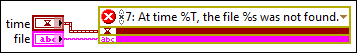

Creating a custom error code is useful if you want to define a single error code or overwrite a single built-in error code. If you have multiple custom errors you want to use in the Error Ring, use the Error Code Editor dialog box. Complete the following steps to create a custom error from the Error Ring for a one-time use.
Click the drop-down arrow to display the Select Error dialog box.
In the Error Code Range drop-down listbox, select Custom Error Code.
Specify an error code in the Error Code field.
To define a custom error code, enter an error code from the following ranges of error codes specifically reserved for custom error messages: -8999 through -8000, 5000 through 9999, and 500,000 through 599,999.
To overwrite an existing error code message, enter the existing error code. Creating a custom error message for an already-defined error code is useful when you want to return the error code for a common error case but you want to provide specific information about this particular instance of the error. For example, you can use error code 7, "File not found." and replace that with a description about the specific file that was not found.
Enter a description in the Error Description (Optional) field. The description field accepts the same format specifiers, such as %s and %T, as the Format Into String function does. For example, for the custom error message "At time %T, the file %s was not found", the configured Error Ring adjusts to include inputs for a timestamp and a string, respectively, as displayed in the following figure.

Use the radio buttons to configure the Error Ring to return either an error or a warning.
Remove the checkmark from the Include Call Chain checkbox if you do not want to include the call chain information in the error cluster. If you include the call chain, the error description displays the chain of callers from the current VI to the top-level VI, which is useful when determining where in the VI hierarchy the error occurred. (Real-Time Module) Exclude the call chain to reduce jitter in real-time applications.
Click OK.
After you configure the Error Ring, you can adjust the configuration without returning to the dialog box.
Click the two icons on the Error Ring to toggle the error/warning setting and the include/exclude call chain setting, respectively.
Right-click the Error Ring and select Generate Error, Generate Warning, Include Call Chain, or Exclude Call Chain from the shortcut menu to affect the relevant configuration.
Right-click the Error Ring and select Visible Items»Error Explanation Text from the shortcut menu to show or hide the error description.
 Add
Add  Find
Find to display the Select Error dialog box.
to display the Select Error dialog box.